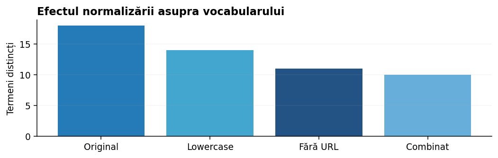

Diacritice, Unicode, URL-uri, numere, emoji și prelucrare fără pierderi inutile. În această lecție explicăm nu doar ce transformări există, ci și de ce unele ajută, iar altele pot strica informația.

lower() trece literele în minusculă. casefold() este și mai potrivit când vrem comparații robuste între forme scrise diferit. unicodedata.normalize("NFC", text) uniformizează reprezentarea unor caractere fără a le elimina. Toate acestea pot ajuta, dar nu trebuie aplicate mecanic.
Dacă problema este analiza de sentiment, semnele de exclamare, repetițiile de litere și emoji-urile pot transmite informație. Dacă problema este identificarea codurilor de produs, cifrele, slash-urile sau cratimele sunt importante. Normalizarea corectă depinde de scop.
Întreabă-te mereu: „Ce tipare utile poate ascunde transformarea mea?”. O preprocesare bună nu face textul „frumos”, ci îl face mai util pentru model.
Expresiile regulate sunt utile pentru identificarea URL-urilor, adreselor e-mail, numerelor, mențiunilor și secvențelor repetitive. În multe aplicații nu vrem neapărat valoarea exactă, ci faptul că acea entitate există. De aceea înlocuim uneori https://site.ro cu URL și 42 cu NUMAR.
Totuși, ordinea contează. Dacă elimini punctuația înainte să detectezi un e-mail, modelul de regex nu îl mai recunoaște corect. În plus, unele date trebuie anonimizate cu grijă, nu doar „curățate”.
Înlocuirea prin marcaje reduce vocabularul și păstrează semnalul structural. Este adesea o alegere mai bună decât ștergerea completă.
Un flux sănătos poate arăta astfel: text original → normalizare Unicode → înlocuire URL/e-mail → comprimare spații → eventual casefold() → verificare pe exemple reale. Păstrăm câteva documente „martor” pentru a vedea exact ce a făcut fiecare pas.
TfidfVectorizer, poți pune o parte din logică în parametrul preprocessor sau poți normaliza textele înainte. Important este să folosești aceeași transformare și la antrenare, și la predicție.Mai jos sunt atât exemple de implementare „from scratch”, cât și exemple de integrare într-o bibliotecă folosită în practică.
import re
import unicodedata
def normalizeaza(text):
text = unicodedata.normalize("NFC", text)
text = re.sub(r"https?://\S+", " URL ", text)
text = re.sub(r"\d+(?:[.,]\d+)?", " NUMAR ", text)
text = re.sub(r"\s+", " ", text).strip()
return text.casefold()
exemplu = " Bună! Vezi oferta 50% la https://exemplu.ro 😀 "
print(normalizeaza(exemplu))
texte = [
"NU recomand!",
"Reducere 50% azi",
"Model AB-123 disponibil"
]
for text in texte:
doar_lower = text.lower()
agresiv = "".join(ch for ch in text.lower() if ch.isalpha() or ch.isspace())
print("ORIGINAL:", text)
print("LOWER: ", doar_lower)
print("AGRESIV: ", agresiv)
print("-")
import re
from sklearn.feature_extraction.text import TfidfVectorizer
def preproc(text):
text = text.casefold()
text = re.sub(r"https?://\S+", " URL ", text)
text = re.sub(r"\s+", " ", text).strip()
return text
texte = [
"Vezi https://site.ro acum",
"Site-ul are ofertă bună",
"Acum citesc documentația"
]
vectorizer = TfidfVectorizer(preprocessor=preproc, ngram_range=(1, 2))
X = vectorizer.fit_transform(texte)
print(vectorizer.get_feature_names_out()[:10])
print(X.shape)
Exemplul 1 arată un flux „manual”. Exemplul 2 arată că o curățare prea agresivă poate distruge informație: dispare negația scrisă cu majuscule, dispare procentul și dispare structura codului AB-123. Exemplul 3 arată cum aceeași logică poate fi integrată într-un TfidfVectorizer, ca să nu uităm să o aplicăm și pe date noi.
„NU recomand! Reducere 50% la https://exemplu.ro 😀” conține negație, majuscule, semn de exclamare, cifre, URL și emoji. Unele semnale sunt utile pentru sentiment, altele pot fi zgomot.
Aplicăm doar normalizarea spațiilor și a Unicode. Semnalele rămân, dar vocabularul poate deveni mare din cauza URL-urilor distincte.
Înlocuim adresa prin marcajul URL și trecem textul în litere mici. Acum modelul poate observa prezența unui link fără să memoreze domeniul exact.
Eliminarea tuturor cifrelor, punctuației și emoji-urilor poate reduce vocabularul, dar distruge semnale relevante. Cele două variante trebuie comparate pe același set de validare.
Nu alegem strategia după preferințe estetice; o alegem după erorile modelului și metrica obiectivului.
Concepte și API-uri: Documentația scikit-learn — Text feature extraction; scikit-learn User Guide. Pentru preprocesare lingvistică: spaCy și Stanza.